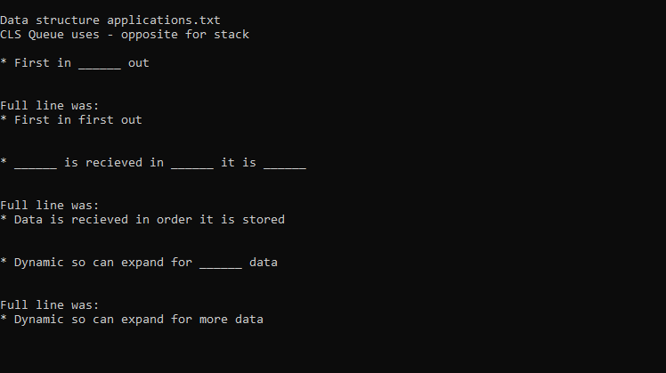
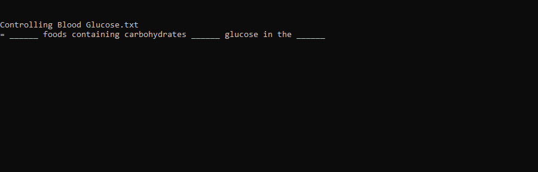
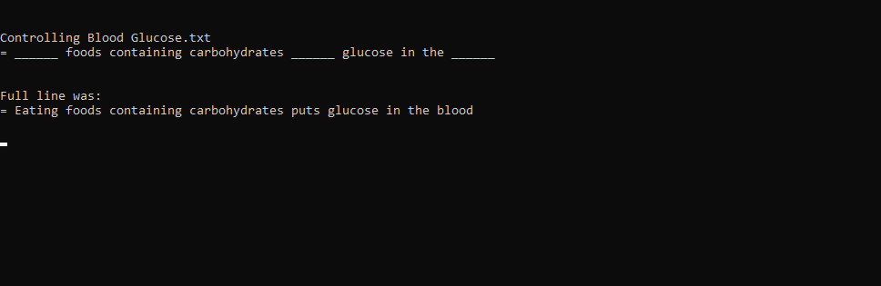
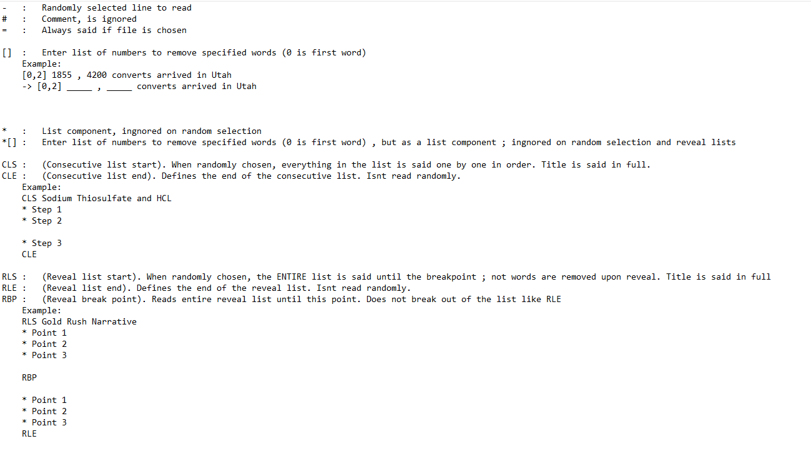
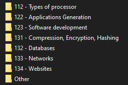
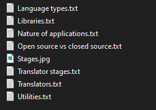
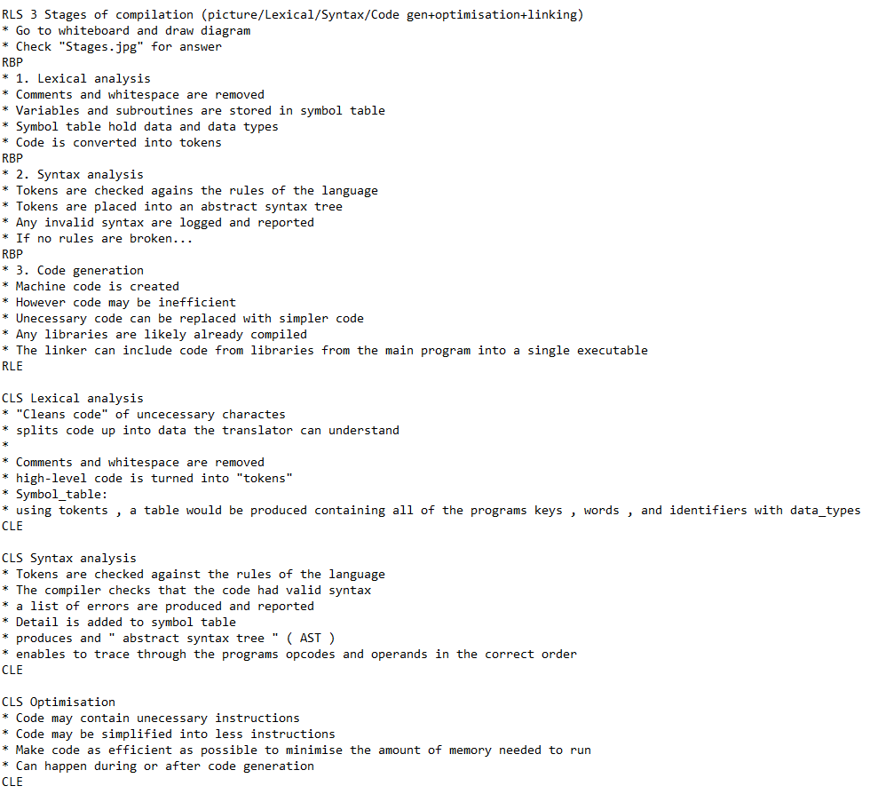

Overview
This is a basic terminal tool used for revising notes in a file tree. The tool makes use of a custom "programming language" that determines the flow of the revision tool or how it reveals information to be recalled. Here is an example of it working:
After each consecutive line the program pauses waiting for the user to hit Enter to continue to the next text prompt. The user is supposed to recall to themselves the information that will be revealed - much like a flash card.
For example, in this case, the user is supposed the recite the missing words denoted by a "_____". When the user feels like they've got the correct answer, they press enter to reveal the original sentence:
Thats the core of the program. It follows this mechanic to reveal revision notes in different ways depending on the user's preference.
Commands & Syntax
The program scans a file tree of text documents containing these commands. When a text file is hit containing revision notes, random lines are selected until a successful command is found. For example, commands starting with "-" can be randomly selected and revealed in the terminal.
The intention of this tool was to mix a "programming language" with revision notes. The result is a list of useful commands that control the flow of revision:
A breif breakdown of each command/wildcard:
- : This line is selected at random when the txt is hit, random words are removed.
= : This line is always selected when the txt is hit, random words are removed.
# : This is a comment. The program ignores these.
[ ] : This is a list of numbers used to index the prompt to remove specific words. (see example above)
* : This defines a list component. When surrounded by a list command, this line is read depending on the list rules.
*[ ] : This defines a list component with specific removal of words. Combined functionlity of * and [ ].
CLS : This defines the start of a consecutive list (see example above). Every press of enter reveals each line of the list one-by-one whilst removing words in the prompt at random.
CLE : This defines the end of a consecutive list.
RLS : This defines the start of a reveal list (see example above). Press enter to reveal every line of the list at once without any random removed words up until a breakpoint is hit.
RBP : This defines a breakpoint in a reveal list. This is used to chunk up a reveal list into multiple sections.
RLE : This defines the end of a reveal list
File Tree
The program uses the root of a file tree to locate different sets of cards. Upon loading the program, you enter the directory of the root folder you wish to trace to reveal cards. The file tree can contain folders within folders if desired (for organisation), but must contain at least one text file containing the revision notes.
This, for example, is one folder of folders relating to my Computer Science notes.
Within the Applications Generation folder I store a bunch of text files (ignore the Stages.jpg).
Within the Translator stages.txt file I store my revision notes.
All folders and files can follow this structure to help you revise for you exams.